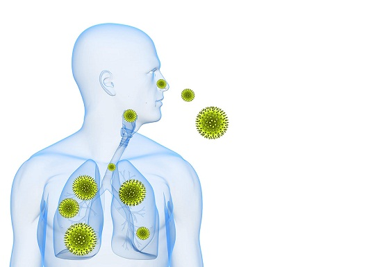
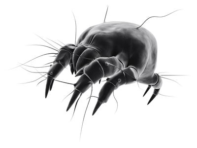
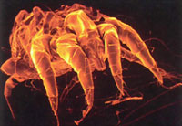
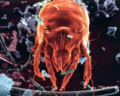
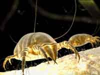
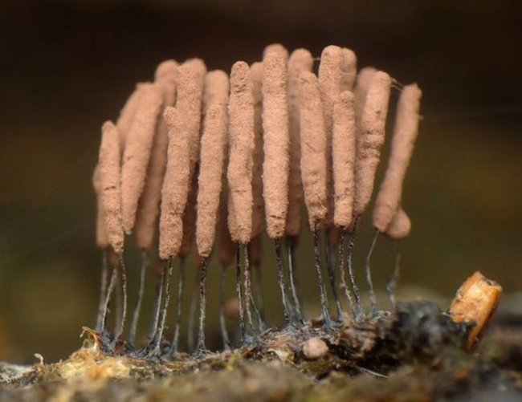
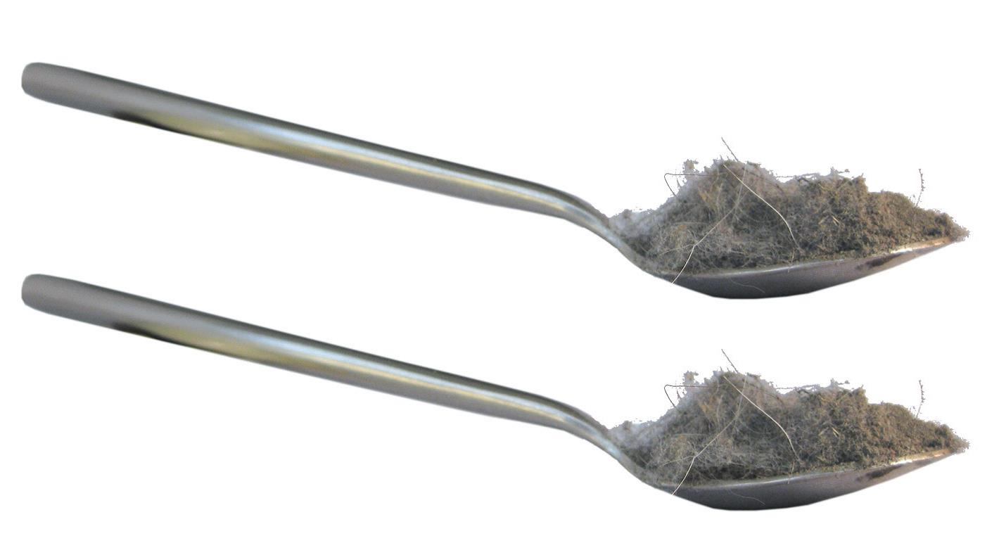

Презентации V601
«Знаете, что любовь нужна как воздух? Так вот, воздух, все-таки, важнее»
ДОКТОР ХАУС
Широкая распространенность аллергических заболеваний, охватившая более 60% городских жителей планеты, ежегодный повсеместный рост аллергопатологии, усиление тяжести клинического течения аллергических заболеваний и резкое снижение качества жизни пациентов превратили проблему аллергии в глобальную медико-социальную проблему.
Возросло число факторов, стимулирующих аллергическую сенсибилизацию (чувствительность). Снизилось влияние защитных противоаллергических факторов.
Перспективы развития аллергических заболеваний неутешительны:
- Проспективное исследование позволяет предположить, что в ближайшие несколько лет , уже половина населения планеты будет страдать различными аллергическими заболеваниями.
- Продолжится рост аллергических заболеваний.
- Растет число пациентов с высоким уровнем чувствительности к большинству аллергенов, в том числе особенно требуют внимания новые аллергены, профессиональные аллергены и аллергены с перекрестной реактивностью.
- Согласно прогнозам, будет отмечаться более тяжелое течение аллергических заболеваний и их частые обострения.
Изменить генетическую предрасположенность организма к аллергии пока не представляется возможным.
Причины роста аллергопатологии связаны с различными факторами:
Как это ни парадоксально, но именно стремление к западному устройству жизни привело современный социум к чуме 21 века. Городская жизнь в отличие от сельской является главной причиной развития аллергических заболеваний. Сельский житель с пеленок привыкает к обилию пыли и аллергенов. Городской житель испытывает похожее развитие со дня своего рождения, но в отличие от сельского жителя городской, вынужден, привыкать, к химическим веществам которые повсеместно его окружают. Если человек способен адаптироваться к органическому миру («живому»), и это называется эволюцией, то взаимодействие с химическими веществами приводит к мутации и деградации иммунной системы, так как она не способна распознавать и защищаться от антигенов (аллергены) современного городского быта.
С 1964 года, когда была установлена связь бытовой аллергии с сенсибилизацией к клещам домашней пыли, проблема не теряет своей актуальности. Более чем у 70% лиц, страдающих аллергией на домашнюю пыль, в среднем через 8 лет развивается бронхиальная астма. У детей с бронхиальной астмой, которой предшествовали симптомы аллергического ринита, в 80% случаев выявляется аллергия на домашнюю пыль. Аллергия – это специфическая повышенная чувствительность к антигенам (аллергенам) в результате неадекватной реакции иммунной системы.
Главной причиной этой проблемы является ухудшение качества воздуха в жилых помещениях.
Совершено, очевидно, что, прежде всего, необходимо заняться источниками загрязнения воздуха в помещении. И здесь особое внимание следует обратить на строительные материалы и внутреннее убранство помещений (мебель, ковры, декорация), персональные компьютеры.
Есть такие "загрязнители воздуха", которые, если их не удалить из помещения, никак не обнаруживают своего присутствия, но сильно сказываются на качестве жизни тех, кто пользуется этим помещением. Название этих "загрязнителей воздуха" – пылевые клещи или сапрофиты!
Улучшение качества воздуха в помещении в 2-7 раз, по сравнению с типичным уровнем в странах с холодным климатом, поведет к снижению риска заболевания астмой, повышению производительности труда служащих и успеваемости учащихся. Потенциальная польза для общества неоценима.
Промышленность, транспорт, производство вредных веществ загрязняют окружающую нас среду. Наша почва и грунтовые воды, наши реки и наши продукты питания, наш воздух – всё это давно находиться в небезупречном состоянии. Воздействие общего загрязнения окружающей среды на здоровье людей и животных становиться все более заметным.
Взрослые люди выросли в лучших экологических условиях, а наши дети дышат последствиями технического прогресса. В прошлом веке насчитывалось около 50-ти болезней дыхательных путей, на сегодняшний день известно более 1000.
Экология жилища
Мы часто говорим о неблагополучии окружающей среды, считая, что главная опасность исходит от загрязненного атмосферного воздуха, воды, почвы, продуктов питания. В жилище человек проводит 60-70% своего времени. Жилище – это не только укрытие от неблагоприятных воздействий природы, но и мощный фактор, воздействующий на человека и в значительной степени определяющий состояние его здоровья особенно в ночное время, когда мы спим.
Экологически чистое жилище – это, прежде всего воздух, которым мы дышим. Внутри любого жилья воздух грязнее того, что за окнами, в среднем в 3 - 4 раза.
Мы отравляем воздух продуктами собственного обмена веществ, газовыми плитами, на которых готовим пищу, каминами и печами, возле которых греемся. Мы отравляем воздух испарениями полимеров, лаков, красок, которыми отделываем стены, полы, двери наших домов. Все синтетические материалы - моющиеся обои, клеенки, пленки в той или иной степени выделяют какие-то вредные вещества. Мы отравляем свою среду обитания дезодорантами и искусственными освежителями воздуха. Кроме того, мы, что бы ни делали, усердно сжигаем кислород, а вместо него выделяем углекислый газ. Проводя основную часть жизни в домах, где отсутствуют природные механизмы очищения воздуха, мы вынуждены очищать его своими легкими, ведь процесс его загрязнения идет постоянно.
Знаете ли Вы о том, что в стандартной трехкомнатной квартире в год образуется до 40 кг пыли. Человек за сутки вдыхает до 12 тыс. литров воздуха, в одном литре которого содержится до 500 тыс. пылинок. Домашняя пыль – одна из самых частых причин аллергии. Согласно медицинской статистике, число страдающих ею граждан составляет 45-85% от общего количества всех вместе взятых аллергиков. Процесс пылеобразования происходит постоянно - вытираются ковровые покрытия, осыпается и вышаркивается краска, с улицы попадает пыль и выхлопные газы автомобилей, люди и домашние животные теряют волосы, кожный эпителий, перхоть и т.д. Пыль является транспортным средством для распространения бактерий и вирусов и способствует возникновению и распространению эпидемий. Все больше и больше людей подвергаются воздействию аллергических реакций. Что мы можем с этим поделать? Кажется, что практически ничего???
Пылевые клещи и аллергия
Любая домашняя пыль является комплексом аллергенов. В состав входят: библиотечная пыль (целлюлоза), фрагменты перьев, шерсти и перхоти животных, шерстяные волокна, волосы и эпидермис человека, споры плесневых грибов и бактерии, частицы насекомых (тараканов), хлопка, обивки для мебели и т.д. Все перечисленное может быть причиной аллергического заболевания, но "главным" из бытовых аллергенов является клещ домашней пыли.
К настоящему времени в домашней пыли найдено около 150 видов клещей (Dermatophagoides pteronyssinus и Dermatophagoides farinae — наиболее "аллергенные" представители). Их называют дерматофагоидными или пироглифидными клещами. Согласно одной из гипотез эти клещи первоначально обитали в гнездовьях птиц, а в последствии "переползли" в наши дома и квартиры. Клещи домашней пыли очень мелкие — между 0.1 и 0.5 мм — и не видны невооруженным глазом. В 1 грамме пыли может содержаться от сотни до нескольких тысяч клещей! Мелкие фрагменты клещей (от 10 до 40 микрон) и продукты их жизнедеятельности (особенно, фекальные частицы) обладают исключительной способностью вызывать аллергию.
  Поднявшись в воздух, эти аллергены подолгу не оседают, а при вдыхании попадают к нам в дыхательные пути.
Домашние пылевые клещи живут около четырех месяцев. В течение этого времени клещ производит экскрементов в 200 раз больше собственного веса. И откладывает до 300 яиц. Теперь понятно, почему концентрация аллергенов в помещении быстро увеличивается за короткое время. Клещ является постоянным спутником человека на протяжении всей его жизни. Основным питанием для клеща являются омертвевшие клетки кожи. В год человек теряет до 2 кг кожи, основная масса которой остается на постельном белье. Поэтому основным местом обитания и размножения является постель, ковры с натуральным ворсом, места скопления пыли и т.д. В Вашей постели живут до 2 млн. клещей, это оптимальная среда для их обитания и размножения.
Проведенные исследования показали, что около 80% людей с бронхиальной астмой имеют повышенную чувствительность к клещам — важному фактору, как развития астмы, так и ее тяжести. Чувствительность к домашним пылевым клещам является, по-видимому, наиболее е показательным примером проблемы здоровья, вызванной изменениями во внутренней среде помещений. Ваш дом и постель это естественная среда его обитания на протяжении тысячелетий.
Невидимые враги — плесневые грибки
Плесневые грибки можно обнаружить в каждом жилье. Даже при регулярной и тщательной уборке постоянно образуются новые частички пыли и отшелушиваются чешуйки человеческой кожи. Клещи, в основном, питаются частичками кожи человека и животных, а также плесневыми грибками. Плесневые грибки являются еще одной причиной аллергии и вместе с клещами создают «взаимовыгодное товарищество». Грибки склеивают кератиновые кожные чешуйки, распад которых образует продукты, обеспечивающие питание домашних пылевых клещей.
Таким образом, плесневые грибки служат не только прямым питанием для клещей, но также и «средством пищеварения». Не сами клещи, а продукты их жизнедеятельности содержат аллергены, являющиеся причиной астмы, экземы и воспаления слизистой оболочки носоглотки.
Теплота и влажность способствует росту плесневых грибков. Aspergillus, показанный здесь (увеличение в 1000 раз) способен вызвать заболевание легких. Миллионы его пор, находящихся в окружающем воздухе, попадают в легкие при дыхании.
Обратная сторона общения с домашними животными!
В домах, где держат кошек или собак, обнаруживается от 1000 до 1000000 аллергена на грамм чистой пыли. Аллергенные свойства шерсти и перхоти, животных не зависят от породы или длины шерсти, — это относится и к собакам, и к кошкам.
Аллергены животных обладают очень высокой «летучестью».
Наиболее типичные реакции на аллергены животных развиваются после их воздействия на систему органов дыхания и конъюнктиву глаз. Они выражаются в виде симптомов аллергического ринита и конъюнктивита. Хотя в развитии бронхиальной астмы ведущую роль играют бытовые аллергены, и клещи домашней пыли, аллергены животных могут сыграть не менее существенную роль, особенно в детском возрасте.
Каждый день, в течение всей жизни, человек делает около 20000 вдохов и выдохов. Таким образом, каждый день в организм попадает примерно две полных ложки частиц пыли.